Season 52 (2017-2018)
The Cinema, Inc.'s 2017-18 season is completely SOLD OUT. To receive information about our 2018-19 season, please email your name and mailing address to us at thecinemainc@gmail.com, so that we can mail you a copy of the brochure for our 53rd season. The new season starts September 9, 2018.
- 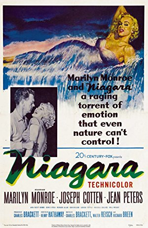
September 10, 2017
Niagara
USA, 1953, 92 min, Color, English, Not Rated
Directed by Henry Hathaway; Starring Marilyn Monroe, Joseph Cotten, Jean Peters, Max Showalter
Marilyn Monroe had been in previous films, but Niagara turned her into an instant icon. This film is a rare Technicolor noir that crosses honeymoon camp with murder and mental illness. Monroe plays the voluptuous Rose, the unhappily married wife of George Loomis, a PTSD-afflicted Korean war vet. They have come to Niagara Falls to rekindle their marriage, but the embers of love are barely warm. Checking into the cabin next door is the chipper salesman type, Ray Cutler, and his wife, Polly. A love quadrangle seems like the obvious direction, but it takes a different turn when Polly spots Rose with another man and George suddenly disappears. A murder conspiracy emerges out of the mist. - 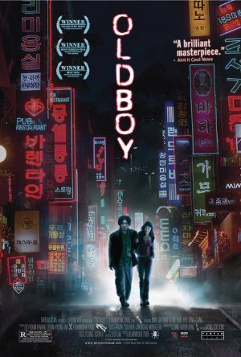
October 8, 2017
Oldboy (Oldeuboi)
South Korea, 2003, 120 min, Color, , R
Directed by Chan-wook Park; Starring Min-sik Choi, Ji-tae Yu, Hye-jeong Kang, Dae-han Ji
After being kidnapped and imprisoned for fifteen years, Oh Dae-su is released without explanation. He learns he must find his captor in five days, unravel the mystery and exact revenge. Rage and hate inflate Dae-su’s courage and strength, making him a fierce animal bristling with raw energy and power. Oldboy is essentially a character study depicting the way vengeance consumes lives and souls as the film goes from mystery to prophesy to oddity. With its relentless pacing, it becomes increasingly ugly and disturbing, but you can’t turn away. At the end, there are no loose ends to unravel. - 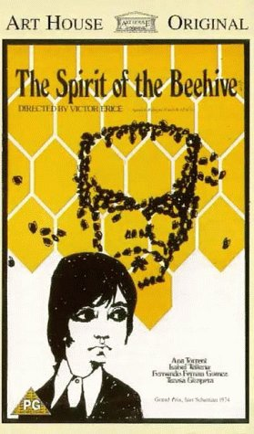
November 12, 2017
The Spirit of the Beehive (El espíritu de la colmena)
Spain, 1973, 95 min, Color, Spanish w/subtitles, Not Rated
Directed by Víctor Erice; Starring Fernando Fernán Gómez, Teresa Gimpera, Ana Torrent, Isabel Tellería
On the Castilian Plains in 1940, a group of children mob the local distribution truck as it delivers the latest film, Frankenstein. One scene in the movie shows a young girl killed by the monster. Ana, a young village girl, is mesmerized and questions her older sister Isabela for answers about the child’s death. Much of the film is spent with Ana trying to understand death and fascinated with the idea that Frankenstein lives on as a spirit. Ana soon heads off to a nearby mountainside to seek out the mystery of death and find that spirit. This film is not only about death, but how important arts can be to the development of a child. An epiphany can take place at any time…in front of a movie screen or in a classroom.
Film Notes: It’s no wonder that The Spirit of the Beehive has received accolades as one of the best Spanish films ever made. It wields equal power as a work of cinematic art on the psychological, the political and the aesthetic level. Although our main protagonist is a six-year old girl and much of the film’s complex narrative is presented from her point of view, we ultimately gain some very adult insights on both the emotional ironies and political absurdities of the story. It’s this magical layering of perspectives that creates a quasi-spiritual experience by the end of the film. Young Ana lives in a Castilian village during and shortly after the Spanish Civil War. While there are many things in her world that she cannot understand yet, she is a highly impressionable child. When the film Frankenstein is shown in the village hall one evening, she is deeply affected by the images and the story, in particular the scene where the monster encounters and accidentally kills the little girl in the film. Even though her mischievous and know-it-all older sister assures her that everything in the movies is “fake”, Ana can’t stop thinking about the monster and begins to merge her own experiences in the “real world” with the ideas derived from the movie. While we are mostly focused on Ana’s child-like perceptions, the director Victor Enrice also presents us with subtle suggestions that all is not well in her overall environment. Her parents seem alienated from each other. It appears that her mother, Teresa, has had an affair with younger man not unlike the Republican soldier who seeks shelter in the supposed “lair of the monster.” We witness Teresa writing letters of nostalgic longing early in the film. Her father, a somewhat disillusioned beekeeper and a “patron” whose status in the village seems ambiguous, teaches his daughters about the dangers of consuming poisonous mushrooms which becomes significant on both the literal and metaphoric level by the end of the film. Often when cultural shifts occur particularly towards a more repressive regime, artists tend to react by employing a more metaphor-laden language. The Spirit of the Beehive is certainly a good example of this. Although the film takes place in 1940’s Francoist Spain, we can take some of its lessons to heart in contemporary America, even if we just begin by thinking about the endangerment of our very own bee population. Sometimes children see far more than we give them credit for and perhaps by assuming a more innocent mind-set, the world can still find redemption. (AM)
Read Roger Ebert's review of The Spirit of the Beehive at Great Movies. - 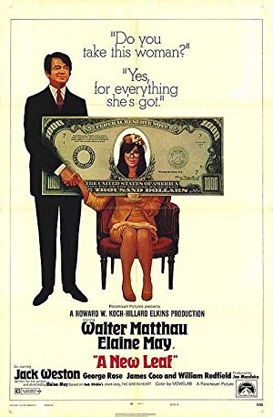
December 10, 2017
A New Leaf
USA, 1971, 102 min, Color, English, Not Rated
Directed by Elaine May; Starring Walter Matthau, Elaine May, Jack Weston, George Rose
Walter Matthau plays a rich man who knows more about spending money than making it. When he learns he is broke, he sets a scheme in motion to get rich again. His plan is to marry a rich woman who no one will miss, then bump her off. Of course things don’t always work according to plan. The rich woman who has been tagged is as smart and naïve as Matthau’s character is dim and cunning. She’s rather clumsy but also a sweet little thing. As details of her premarital life are gradually revealed, we begin to understand the myriad ways in which every individual in her life has taken advantage of her naivete and charity. - 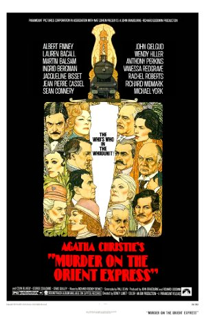
January 14, 2018
Murder on the Orient Express
UK, 1974, 128 min, Color, English, PG
Directed by Sidney Lumet; Starring Albert Finney, Lauren Bacall, Martin Balsam, Ingrid Bergman
Sidney Lumet’s adaptation of Agatha Christie’s celebrated mystery is a nostalgic throwback to the early days of Hollywood when all-star casts routinely graced the screen. However, it is Albert Finney who truly runs the show here as the determined (and occasionally obnoxious) Hercules Poirot. This is not a great whodunit mystery, but this is old fashioned entertainment where the movie stars are on view the entire show. Everyone gets a chance to chew the scenery, show off their beautiful young (or revered old) faces and deliver a dialogue zinger or two. Lauren Bacall has the sauciest lines; Ingrid Bergman plays a repressed Swedish missionary; Sean Connery is a British officer with secrets to hide…you get the idea! - 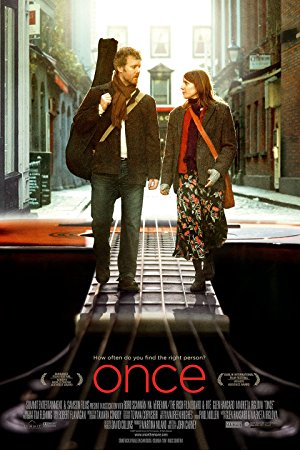
February 11, 2018
Once
Ireland, 2007, 86 min, Color, English, R
Directed by John Carney; Starring Glen Hansard, Markéta Irglová, Hugh Walsh, Gerard Hendrick
Once is a musical more concerned with music than costumes, and a love story more interested in love than sex. Unfolding on the streets of Dublin, the movie follows the fortunes of two people for whom prosperity is only a dream. Nope, they do not have names. Guy, the male lead, is a busker who sings songs on the nighttime streets. Girl, an immigrant Czech maid who relinquished a career as a concert pianist, sells roses on the same sidewalks to help support her mother and daughter. A music store owner allows her to play his pianos. When she takes Guy with her, they discover a powerful musical bond. The film’s music is at once ethereal and shattering but also its point. When you watch the film you will expect one outcome. Listen to it and you’ll hear quite another. - 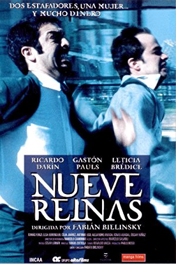
March 11, 2018
Nine Queens
Argentina, 2000, 114 min, R
Directed by Fabián Bielinsky; Starring Ricardo Darín, Gastón Pauls, Leticia Brédice.
Nine Queens is a first-class heist movie. Juan is a struggling swindler, stuck cheating convenience stores out of unimpressive amounts of cash. He catches the eye of Marcos, a professional con artist, who coincidentally is in need of a new partner. The two spend a day getting acquainted, demonstrating various small-time cons for each other. They come across a potentially lucrative deal involving a set of forged stamps known as the Nine Queens. It is quite entertaining to watch these guys as they set up an extremely elaborate heist regarding the forged stamps. If you are a viewer who is hard to trick, you’ll enjoy trying to figure out the con. It’s fun to be fooled.
- 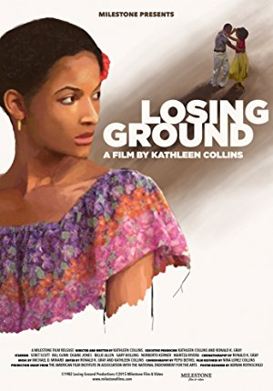
April 8, 2018
Losing Ground
USA, 1982, 86 min, Not rated
Directed by Kathleen Collins; Starring Billie Allen, Gary Bolling, Clarence Branch Jr., Joe Garcia.
Sara Rogers has reached a crossroads in her life. She’s a professional African-American woman, but the film isn’t defined by race or sex. Sara is a professor at CCNY. She teaches a course on existentialism, but also pursues a project on “ecstasy,” even though confessing that she doesn’t know what it means to be transported outside herself. Sara’s husband, Victor, is her temperamental opposite: ebullient, effusive, outgoing. New horizons appear for Sara when she is asked to star in a student film. Cast in the role of a deceived lover who shoots her partner in a jealous rage, she finds her own emotions transformed. - 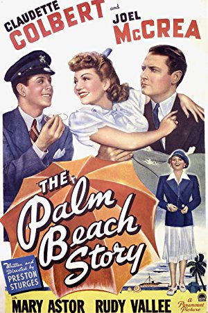
May 13, 2018
The Palm Beach Story
USA, 1942, 88 min, Not rated
Directed by Preston Sturges; Starring Claudette Colbert, Joel McCrea, Mary Astor, Rudy Vallee.
Gerry (Claudette Colbert) and Tom (Joel McCrea) have been married for years and are very much in love, but their marriage is falling apart because of financial problems. Gerry finally decides that it’s best to get a divorce in Palm Beach and start fresh. The film is full of witty dialogue, outstanding one-liners, razor-sharp satire, fantastic characterizations and a great sense of humor. The magic that makes Sturges’ films so entertaining is that they transport the audience to a different place where good things happen to good people and at the end true love always wins. - 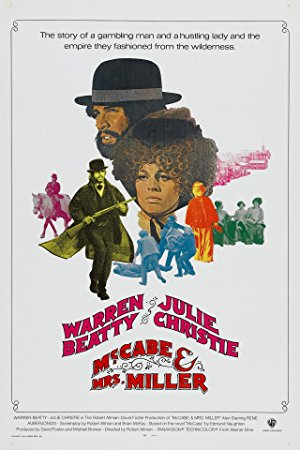
June 10, 2018
McCabe & Mrs. Miller
USA, 1971, 120 min, R
Directed by Robert Altman; Starring Warren Beatty, Julie Christie, Rene Auberjonois, William Devane.
The film is brilliantly awkward…or, refreshingly authentic if one does not quite accept the glorious image of the American West the early Westerns portrayed. It’s set in a small mining town, a place looking for identity and a leader. The gambling gunslinger, John McCabe (Warren Beatty), believes he can give the town what it needs: a brand new brothel. McCabe runs the brothel as he wants until the classy whore Constance Miller (Julie Christie) arrives and offers him a deal he is forced to consider. Along comes a big mining company wanting to buy him out, but he reluctantly vows to defend his ground. - 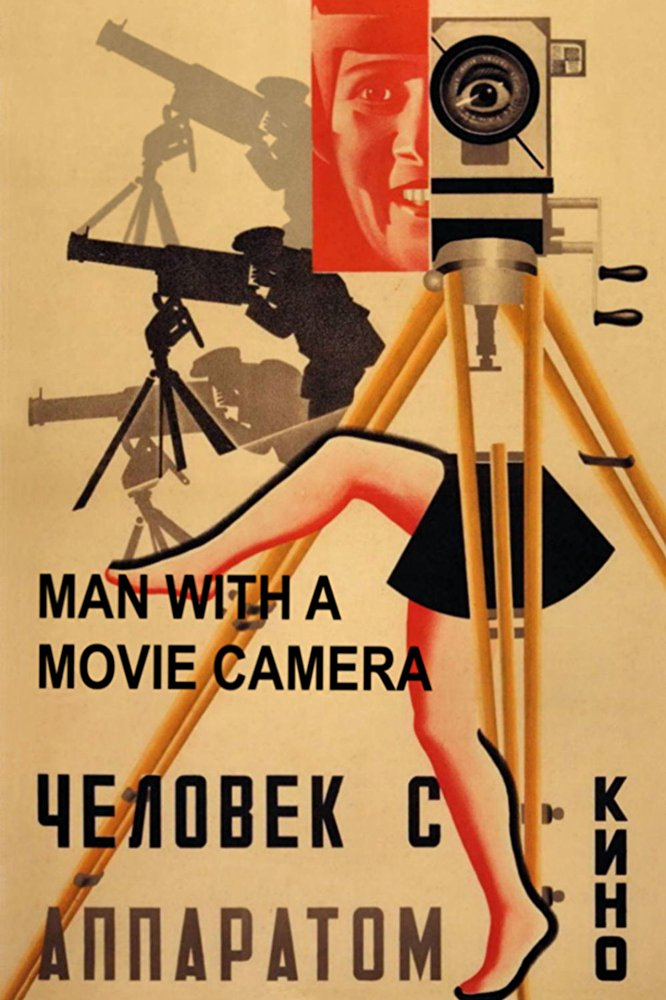
July 8, 2018
Man with a Movie Camera
Soviet Union, 1929, 68 min, Not rated
Directed by Dziga Vertov; Starring Mikhail Kaufman.
This silent film demonstrates the director’s insistence on skyrocketing the medium away from the theatrical and into a specific cinematic style that makes more use of camera technology. There is no distinctive plot or scenario to this film, no titles, actors or sets. What is to be witnessed is "real". Shot in several Russian cities, this hypnotic gem of a film has two goals in mind: to capture the day-to-day activities of the people and to demonstrate a vast array of camera techniques. The film consists of 1,775 separate shots whose average length is 2.3 seconds…a little like watching life on fast-forward. The audience is challenged to put together these events optically and emotionally to go beyond the common playacting of the time.  August 12, 2018
August 12, 2018
The Night of the Hunter
USA, 1955, 92 min, Not rated
Directed by Charles Laughton; Starring Robert Mitchum, Shelley Winters, Lillian Gish, James Gleason.
This film is a nightmarish journey through a surreal landscape. Director Charles Laughton establishes a complex mood, toned by contrasts of innocence and evil, humor and menace, spirituality and hypocrisy. Robert Mitchum poses as a preacher, who cozies up to rich women, kills them and runs off with their fortunes. He hears about a stash of stolen money from a guy in jail and hunts down the guy’s wife and two kids to find it. The kids are quick to see through him. A disturbing sense of foreboding grows as he ingratiates himself with the woman and the townsfolk. The final sequence illustrates the clash of conflicting spiritual principles.
Film Notes: Honeymooners have traditionally been attracted to Niagara Falls, and Ray and Polly Cutler (Showalter and Peters) are no exception. But when they check into their honeymoon bungalow to start their belated honeymoon, they’re also drawn into an intrigue: the troubled marriage of another couple, George and Rose (Cotten and Monroe). George and Rose have many troubles: She’s younger and gorgeous, he’s an older, jealous Korean War veteran who has spent time in an Army mental hospital, ostensibly with mental problems resulting from his war service. Polly begins to suspect the worst when she sees Rose kissing another man, Patrick (Allen). The plot thickens and following some twists and turns, we’re treated to the inevitable showdown at the brink of the Falls. But how we get there is the best part!
Niagara is a sumptuous film noir, albeit a film noir shot in vibrant Technicolor. Initially intended as a star vehicle for Jean Peters, the film instead became Marilyn Monroe's after her career trajectory took a sharp turn upward. Co-starring is the always wonderful Joseph Cotten in the type of sinister role that only he could play. Cotten accepted the role after James Mason turned it down, and he brings to the role a sense of tragedy that would have escaped James Mason.
The New York Times 1953 review of this film said, "Seen from any angle, the Falls and Miss Monroe leave little to be desired by any reasonably attentive audience," and that "the producers are making full use of both the grandeur of the Falls and its adjacent areas as well as the grandeur that is Marilyn Monroe. The scenic effects in both cases are superb." Interestingly enough, the Niagara Falls representative to the Ontario government complained that the dark-themed film harmed the reputation of the honeymoon capital.
So sit back and enjoy the view, whether that be the sight of Marilyn Monroe in her prime, or the breathtaking scenic views of the falls. (KB)
Film Notes: When Park Chan-wook’s Oldboy premiered in 2003, it sent immediate shockwaves through the world cinema community. The second film in Park’s "vengeance trilogy" (following Sympathy for Mr. Vengeance and preceding Lady Vengeance), the film’s brutal violence and operatic meditation on the nature of revenge pulverized audiences around the globe, many of whom didn’t know whether they had seen a work of shameless exploitation or deranged genius. Perhaps it was both. Either way, the picture represented an international breakthrough that announced its director as a major new voice on the world scene.
The setup is pure Hitchcock. A misanthropic, morally bankrupt businessman embarks on an all-night bender only to wake up the next morning trapped in a single room with no idea of how or why he got there. He then spends 15 years imprisoned in the same solitary room with nothing but a television, from which he learns that his wife has been murdered and daughter adopted into a family far away. Eventually he is released, with no explanation, and sets out on a quest to find out who imprisoned him and why, and to seek revenge no matter the cost.
Beautifully paced and marked by quick bursts of violence, Oldboy unfurls like a Swiss watch, delivering each new revelation and plot twist with surgical precision. Though criticized by many for its brutality, in truth the film is no more graphic than anything found in Shakespeare or Greek tragedy, both of which it is clearly designed to resemble. Without giving anything away (this is not a film you want spoiled), by the end it’s clear that revenge has been exacted, though the viewer is left to ponder whether anyone is left better off for having achieved it.
Upon release, Oldboy received rapturous reviews, winning the Grand Jury Prize at the 2004 Cannes Film Festival and quickly becoming a cult classic awaiting discovery by any discerning filmgoer willing to seek it out. And like any major international hit, Hollywood studios were quick to jump on its success, leading to an interesting but ultimately pointless American remake in 2013 directed by none other than Spike Lee. Regardless of its legacy, viewers coming to the film today will find a story that retains all of its power, wears its influences proudly on its sleeve and remains a modern classic, as bold and daring as anything released in the post-millennial era. (MVH)
Film Notes: Henry Graham has only one ambition in life: to continue his indolent life as man about town. Unfortunately, he has been paying more attention to the “carbon on the valves” of his Ferrari than to his bank balance. And he finds himself broke. He must bid farewell to his bespoke suits, his polo ponies, his beautiful apartment, his gentleman’s gentleman Harold…unless….he finds, woos, and weds a rich wife in six weeks. Time is running out when he chances upon Henrietta Lowell, a shy, bespectacled, very clumsy botanist who has…no mother…no father…no brother…no sister…and is therefore perfect for what Henry plans to be a short married life. He is not above a little uxoricide (wifeicide for the untutored) once he has his hands on her money. Henrietta is a mess…literally a mess… Henry finds himself brushing her off after meals, cleaning her glasses, and replacing her incompetent, licentious, and dishonest house staff. Finally on their honeymoon, Henrietta apologizes for being so much trouble, Henry reassures her, “That’s okay; it won’t be for long.” Will he or won’t he? It is so much fun finding out! This is Elaine May’s directing debut (she also wrote the screenplay). Although a critical success, it didn’t do well at the box office but is now considered a cult classic. The supporting cast is superb — James Weston is Henrietta’s deceitful, increasingly frustrated lawyer; Doris Roberts is Henrietta’s housekeeper who leers and winks at Henry in a misguided attempt to seduce him; and Renee Taylor is one of Henry’s bawdiest candidates for marriage. Callum Marsh of the Village Voice says A New Leaf is “a film of such wit and comic invention that it belongs among the great American comedies.” (KHR)
Film Notes: Before Kenneth Branagh’s recent remake of Agatha Christie’s famous whodunit, Sidney Lumet had already successfully given it a whirl in 1974. Hercule Poirot is called on to solve a murder that occurred in his car on the Orient Express the night before. The all-star cast includes Albert Finney as Poirot, arguably Dame Christie’s most renowned sleuth (although Miss Marple may take issue with that assertion). The cast includes illustrious actors such as Ingrid Bergman, Lauren Bacall, Martin Balsam, John Gielgud, Jacqueline Bissett, Sean Connery, and the list goes on and on! The film was commercially and critically well-received, receiving six nominations at the 47th Academy Awards: Best Actor (Finney), Best Supporting Actress (Bergman), Best Adapted Screenplay, Best Original Score, Best Cinematography, and Best Costume Design. Of these nominations, Bergman was the only winner. There are red herrings and false leads aplenty, but M. Poirot will put his little grey cells to the test and come up with a solution that will surprise you – unless you’ve seen the remake or read the book, that is. Nonetheless, Murder on the Orient Express is a fun romp that bears another viewing, or another reading, for that matter. (KB)
Film Notes: It’s wonderful to be reminded of just how unlikely a success Once was when it premiered in the summer of 2007. John Carney’s tiny, roughshod Irish indie musical, a mostly platonic love story with no real plot and a cast of non-professional actors, featured a production budget of only $150,000 and went on to gross more than $23 million, securing its place in independent cinema lore forever and thoroughly charming any audience lucky enough to discover it. In many ways, Once arrived at exactly the right time and provided a much-needed course correction for the musical genre. By 2007 the great musical renaissance heralded by the one-two punch of Moulin Rouge! (2001) and the Oscar-winning Chicago (2002) had mostly fizzled, killed off by one too many sterile, rote adaptations of Broadway hits (see: Rent (2005), The Producers (also 2005)). Instead of lavish production numbers and sweeping romance, Carney’s film went for intimacy, opting for the simple story of a street musician (known simply as "The Guy") and a flower girl ("The Girl") who meet cute, write and record some songs together and maybe fall in love. Within the contours of this paper-thin premise ("story" would almost be overstating it), Once becomes a wistful, melancholy celebration of music itself, one that pays homage to the beauty and romance inherent in the simple process of creating. It’s impossible to talk about the movie's charms without mentioning its beguiling lead performances. Hansard and Irglová, both of whom were professional musicians but not actors (Irglová was only 17 at the time of filming), bring an untarnished quality to their roles that remains utterly disarming, with a chemistry that reaches full tilt in their musical performances (their opening duet, the Oscar-winning Falling Slowly, remains an utterly lovely musical moment). The shared affection, while never blossoming into full-blown romance on-screen, is so palpable that it’s not surprising to learn that it led to a brief off-screen relationship (which ended in 2009, though the two remain friends). Once’s success naturally led to a (multiple-Tony-award-winning) Broadway musical that toured internationally, and though no one involved became household names, all have maintained successful careers in the years since (I’d urge anyone who enjoys the film to check out Carney’s lovely Sing Street (2016), currently streaming on Netflix). Regardless, the film itself remains a gem of post-millennial cinema, a perfect Valentine that continues to charm in each return viewing. (MVH)
Film Notes: Funny, brilliant and personal, Losing Ground should have ranked high in the canon of indie cinema. But the early times of the 1980s was not an easy time for women or independent filmmakers, and the film was never broadly released. The director was Kathleen Collins and twenty five years after her death, her daughter, Nina Collins rescued the original negative and created a beautiful new digital master. It is a testament to Kathleen Collins incredible talent and a lasting treasure of African American and women's cinema.
Losing Ground tells the story of a marriage of two remarkable people, both at a crossroads of their lives. Sara Rogers, a black professor of philosophy, is embarking on an intellectual quest to understand the “ecstatic” experience just as her painter husband Victor sets off on a more earthly exploration of joy.
Celebrating a recent museum painting sale, Victor decides to rent a country house where he can return to working in realism after years of working as an abstract expressionist. Away from the city, the couple's summer idyll becomes complicated by Sara's research projects and by Victor's involvement with a young model. One of Sara's students, who is studying film, asks Sara to take a part in a play which casts Sara as the woman scorned in a film version of the song “Frankie and Johnny”. As she plays the part she experiences a painful emotional awakening and some hard truths about her life.
While dealing with strong individuals and feelings, the film is also charming. This work is to be lauded, appreciated and cherished. (RW)
Film Notes: The Palm Beach Story is one of the maddest of the seven madcap comedies written and directed by Preston Sturges between 1940 and 1947. The storyline is convoluted and crazy. A married woman, Gerry (Claudette Colbert), leaves her cash-strapped architect husband, Tom (Joel McCrea), and leaves for Palm Beach so she can marry a wealthy suitor and fund her ex-husband’s business ventures. When Tom follows Gerry (get the joke – Tom and "Jerry"?), they encounter a marriage-minded millionaire (Rudy Vallee) and his sister (Mary Astor), who is also on the hunt for a spouse. Now that all the triangulations are in place, the fun begins.
Preston Sturges was to this genre what Alfred Hitchcock was to the suspense thriller. While directors such as Howard Hawks and Ernst Lubitsch made these screwball comedies quite successfully, none of them was the auteur that Preston Sturges was. No writer could match his talent for writing snappy, slang-laden dialog that sounds natural, with characters talking over each other and interrupting each other so often that the dialog seem fresh and effortless. Sturges' voice is so unique and individual that his style can't be mistaken for anyone else's.
Besides writing these films, Sturges was deeply involved in casting the films and he also directed the actors himself. His influence in Hollywood of the 1940s was so great that at one time, Sturges was the third highest paid person in the United States. The arc of his career was brief but brilliant.
Sturges' films reflect the culture and tone of America in the 1940s, with characters of various ethnicities as part of the mix, and with the colorful characteristics of their way of expressing themselves preserved. The concept of the American melting pot is intact here, and presented in a manner that makes us laugh with self-acceptance rather than ridicule. Not that there isn't a good deal of malarkey present in the dealings of these characters – far from it. But The Palm Beach Story demonstrates that the strength of our nation is derived from the richness of our diversity, and was presented at a time when Europe was fracturing along lines of race, nationality and ethnicity. Not a bad lesson to be learned at any time, especially when the message is delivered with the style and wit of a master in the fullness of his powers. (KB)